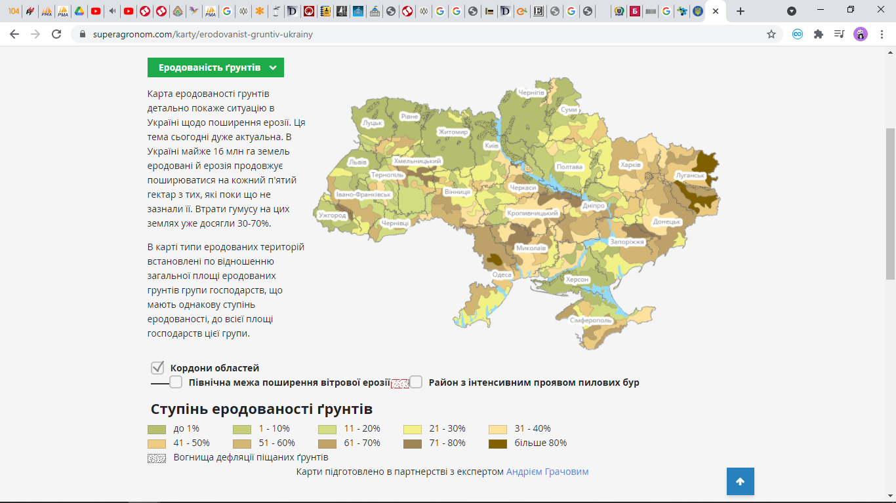
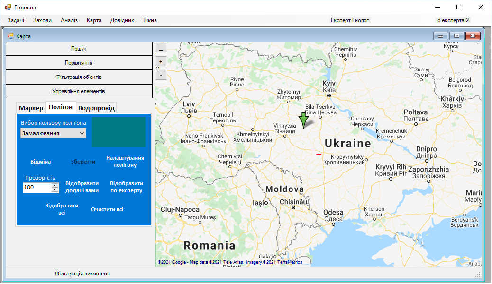
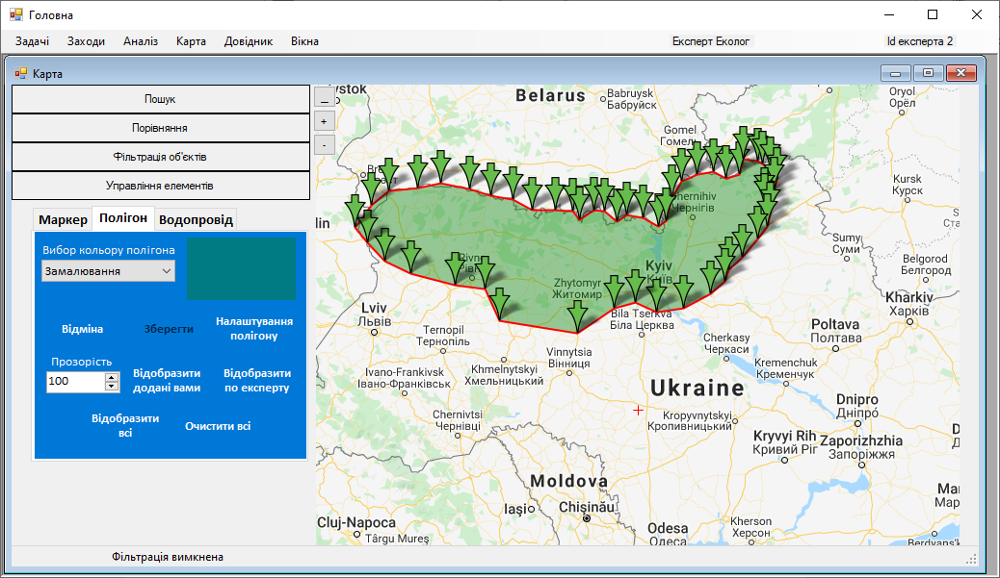

Крок 7. Поставити точки полігону на карті
Для прикладу візьмемо карту еродованості ґрунтів. Зобразимо на карті полігон, де ступінь еродованості ґрунту до 1%.
Експерт подвійним кліком миші на карті ставить першу точку полігону.
Тепер експерт подвійним кліком миші ставить наступну точку на карті, і так поки не поставить всі точки на карті і не зобразить весь полігон. Після нанесення всіх точок полігон виглядатиме приблизно так як на наступному рисунку.
Попередження! Звичайно, полігон виглядатиме недосконало, тому що на інтерактивних картах полігони зображуються за допомогою заокруглених ліній, а в системі між точками проводяться прямі ліній.
